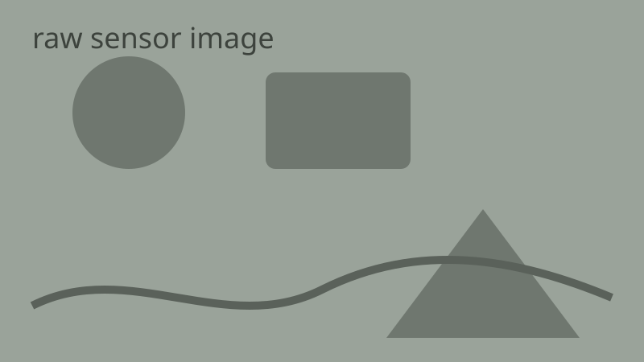

Every template,
now a lecture.
Press N for notes, M for the menu, T for the talk timer, ? for all shortcuts.
Fusing two beliefs
Arrow keys on a slider move the slider, not the slide.
Uncertainty in 2-D is an ellipse
Samples keep streaming while this slide is open; other slides don't animate.
Classroom tools
- P presenter view — notes, next slide and timer in a second window
- B / W black or white screen · L laser pointer
- D draw on the slide (C clears, Backspace undoes) · Ctrl+P prints every slide
Quick check
Two sensors disagree. One has σ = 1, the other σ = 2. Which one should the fused estimate sit closer to?
Five-minute break
Starts on its own when this slide opens · click to pause · double-click to reset
Video & audio
Nothing plays on its own. Press play; leave the slide and it stops and rewinds.
YouTube links on a slide are paused the same way.
Reveal one idea at a time
- Press → : the next point appears
- Press ← : it hides again
- Same number → appear together
- (like this one)
Printing and exporting show every step.
Bayes, in one line
The posterior is $p(x \mid z) \propto p(z \mid x)\,p(x)$, and for Gaussians the fused variance is
$$\sigma^2 = \frac{\sigma_A^2\,\sigma_B^2}{\sigma_A^2 + \sigma_B^2}$$Prices stay text: the sensor costs $5 and the kit $10, US$5-$6.
Code, line by line
def kalman_step(x, P, z, R):
# predict
x_pred, P_pred = x, P + Q
K = P_pred / (P_pred + R) # gain
x_new = x_pred + K * (z - x_pred)
return x_new, (1 - K) * P_pred→ highlights lines 1–2, then 4, then 5–6. Hover the block to copy it.
Which variance is smaller?
- The prediction's
- The sensor's
- The fused estimate's
- It depends on the gain
Fusing two Gaussians always gives a narrower one than either input.
Charts from data
| Step | Error |
|---|---|
| 1 | 9.1 |
| 2 | 5.2 |
| 3 | 3.0 |
| 4 | 1.9 |
| 5 | 1.4 |
Play, pause, step
1 · Predict the state
2 · Measure
3 · Weigh by the gain
4 · Update and repeat
Before / after


Click the numbers

Noisy readings come in here.
The model predicts the next state.
The estimate is better than either input.
Scan for the slides
github.com/awun0105/deck-kit
Press Z and drag a box
Small print the back row can't read: the gain K balances how much we trust the model against the sensor; K → 1 trusts the sensor.
Thank you.
Print → Save as PDF gives one slide per page, canvases included.